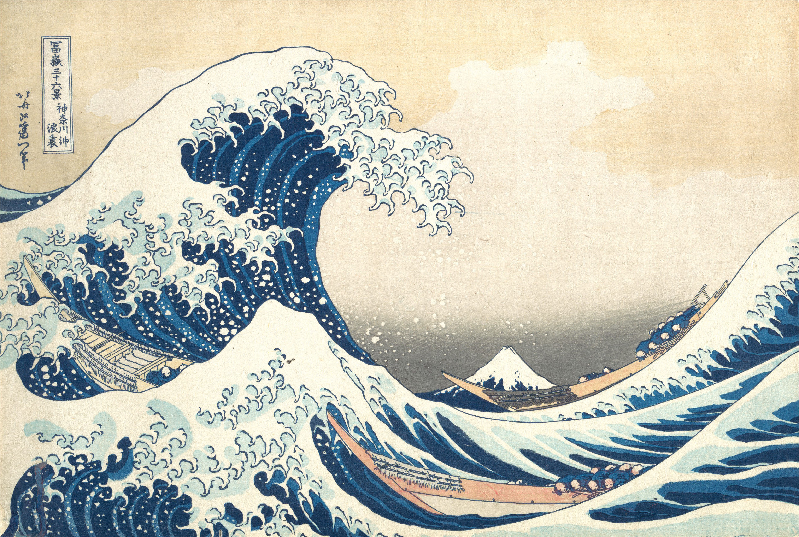

I build in layers.

Fullstack developer and UI/UX designer in Vietnam. I design the layer, then build the system: web products, AI chatbots, and the teams who run them.
3 products · 24 screens · 0 stock photos
See the workKatsushika Hokusai, Under the Wave off Kanagawa, 1830–32. The Met, public domain.